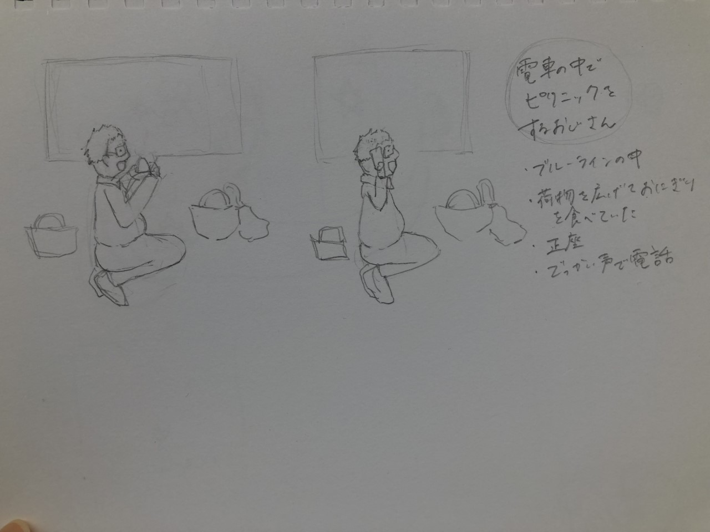
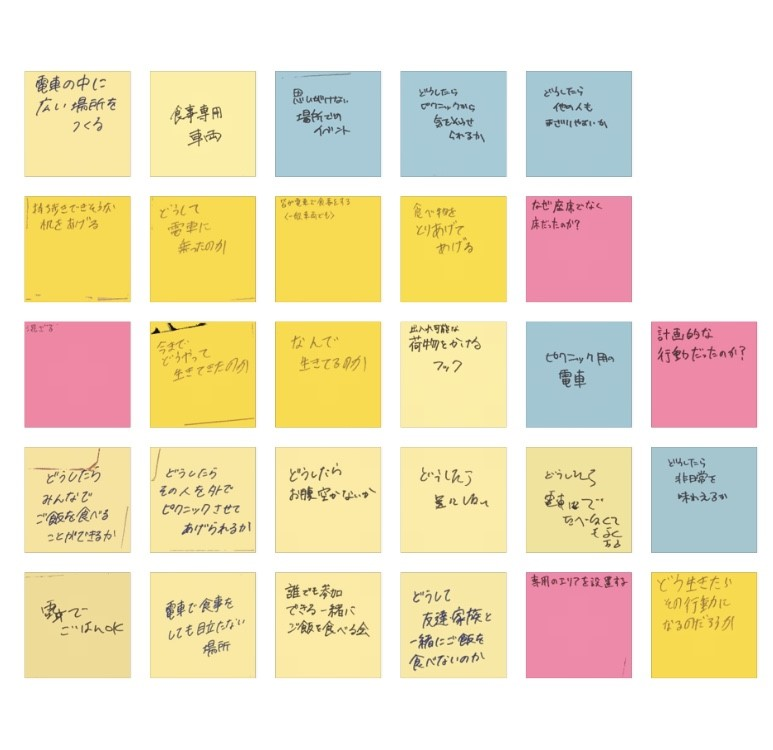
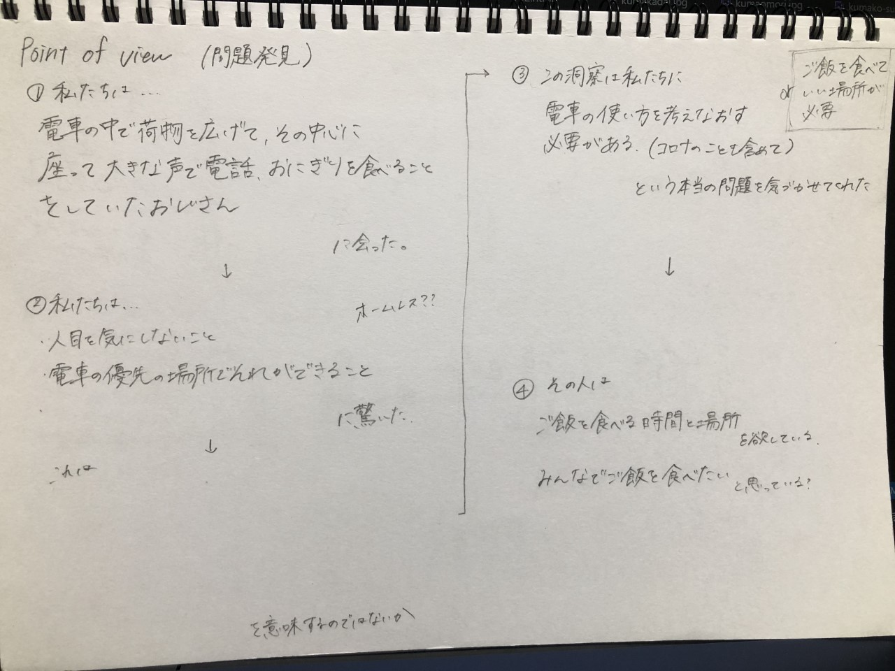

第4回課題
Desgin for Others
- 解決したい問題
＜観察課題の中からピックアップした人＞

＜この人の行動の理由や考えの推論＞

この人の行動から．．．
・ピクニックがしたい
・一緒にご飯を食べる人がいない
・ご飯を食べる場所がない
のではないかと考えた。
＜Point of View＞

＜班で設定した課題＞
時間や場所がなくても楽しく食事ができる、というような場所がないこと
↓
机が持ち運べれば、場所を気にせず食事ができるのでは…？
↓
↓
私たちの班では、持ち運び可能な机をそれぞれで作ることに決定！
- 制作したもの
机にもなるノートケース

＜使用機材＞
レーザーカッター
＜制作理由＞
・ノートのサイズなら鞄の中に入りやすいと思ったから。
・どうせなら机以外の機能も付けたかったので、ノートのカバーにしてしまおう！と思った。
（鞄の中でノートの端が折れたり、表紙が汚れてしまったりするのが気になっていたため。）
＜この製品のポイント＞
・楽しく食事できるようにするために自分の好きな写真を入れられるようにした。
→推しの写真を入れれば、推しとご飯が楽しめます^^
・ピクニック気分を味わえるようなイラストを彫刻した。
・ノートのサイズなので持ち運びやすい。
・ノートが折れたり汚れたりするのを防げる。
・用途に合わせて大きさが変えられる。（カバーの開閉で）
- 班のメンバーの製品